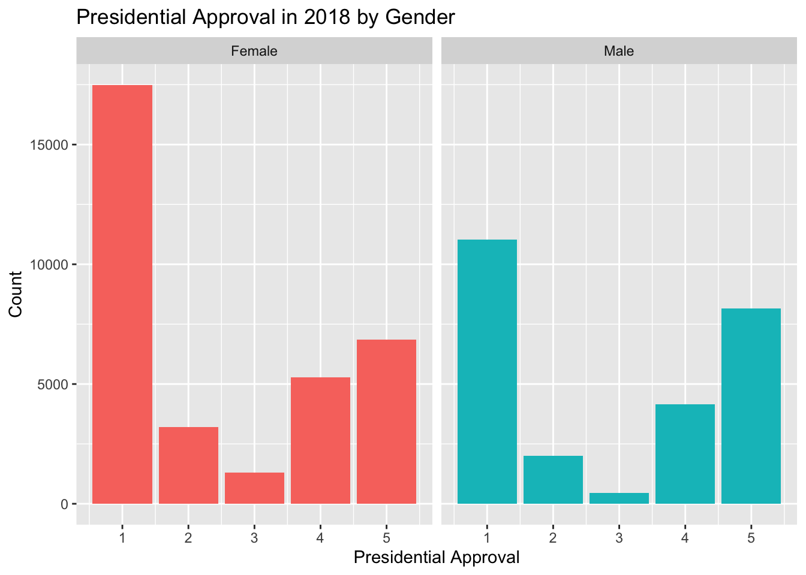
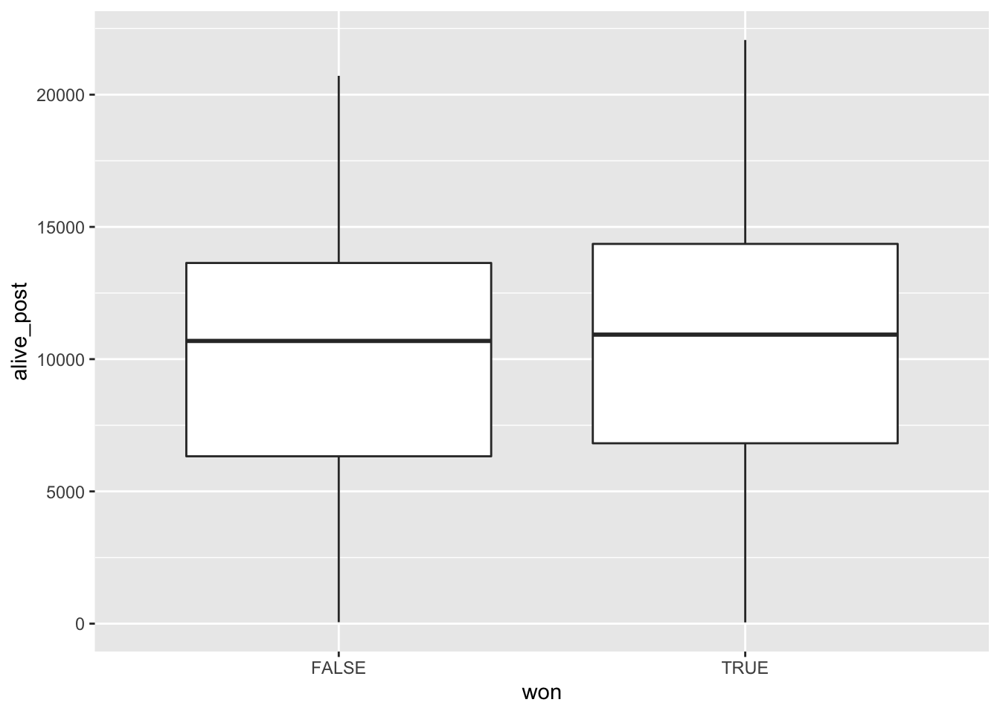
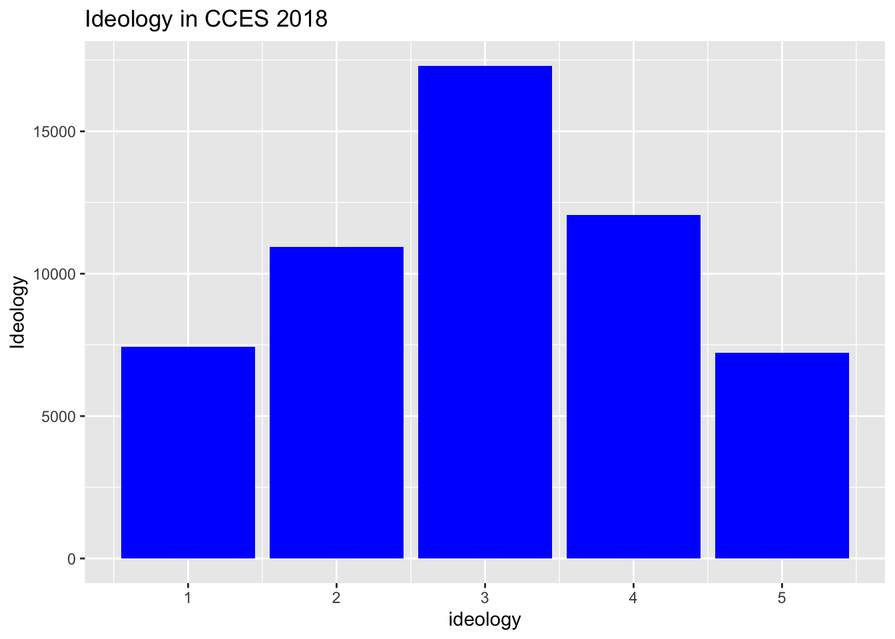

Chapter 10 Pitfalls
The fundamental goal of data modeling is to make explicit the relationship between:
- an outcome variable \(y\), also called a dependent variable or response variable, and
- an explanatory/predictor variable \(x\), also called an independent variable or covariate.
Another way to state this is using mathematical terminology: we will model the outcome variable \(y\) “as a function” of the explanatory/predictor variable \(x\). When we say “function” here, we aren’t referring to functions in R like the ggplot() function, but rather to a mathematical function. But, why do we have two different labels, explanatory and predictor, for the variable \(x\)? That’s because even though the two terms are often used interchangeably, roughly speaking data modeling serves one of two purposes:
- Modeling for explanation: When you want to explicitly describe and quantify the relationship between the outcome variable \(y\) and an explanatory variable \(x\), determine the importance of any relationships, have measures summarizing these relationships, and possibly identify any causal relationships between the variables. (What’s a causal relationship? Remember the Rubin Causal Model! The causal effect of \(x\) on \(y\) is the difference in potential outcomes of \(y\) given different values of \(x\).)
- Modeling for prediction: When you want to predict an outcome variable \(y\) based on the information contained in a set of predictor variables \(x\). Unlike modeling for explanation, however, you don’t care so much about understanding how all the variables relate and interact with one another, but rather only whether you can make good predictions about \(y\) using the information in \(x\).
For example, say you are interested in an outcome variable \(y\) of whether patients develop lung cancer and information \(x\) on their risk factors, such as smoking habits, age, and socioeconomic status. If we are modeling for explanation, we would be interested in both describing and quantifying the effects of the different risk factors. One reason could be that you want to design an intervention to reduce lung cancer incidence in a population, such as increasing family income. In that case, you would want to know the causal effect of income on the incidence of lung cancer.
If we are modeling for prediction, however, we wouldn’t care so much about understanding how all the individual risk factors contribute to lung cancer, but rather only whether we can make good predictions of which people will contract lung cancer.
Linear regression involves a numerical outcome variable \(y\) and explanatory variables \(x\) that are either numerical or categorical. Furthermore, the relationship between \(y\) and \(x\) is assumed to be linear, or in other words, a line. However, we’ll see that what constitutes a “line” will vary depending on the nature of your explanatory variables \(x\).
In Section 10.1, the explanatory variable will be numerical. This scenario is known as simple linear regression. In Section ??, the explanatory variable will be categorical.
In Chapter 11 on multiple regression, we’ll extend the ideas behind basic regression and consider models with two explanatory variables \(x_1\) and \(x_2\). In Section ??, we’ll have two numerical explanatory variables. In Section ??, we’ll have one numerical and one categorical explanatory variable. In particular, we’ll consider two such models: interaction and parallel slopes models.
Let’s now begin with basic regression, which refers to linear regression models with a single explanatory variable \(x\). We’ll also discuss important statistical concepts like the correlation coefficient, that “correlation isn’t necessarily causation,” and what it means for a line to be “best-fitting.”
Let’s now load all the packages needed for this chapter (this assumes you’ve already installed them). The main packages are ones we have used before. The Advanced Section of the chapter makes use of
- The rstanarm package, which provides an interface to the statistical inference engine, Stan, for Bayesian Regression Modeling.
- The tidybayes package, which aids in formating Bayesian modeling outputs in a tidy manner and provides ggplot geoms for plotting.
- The broom.mixed package, which provides broom-type functions for the output objects generated by rstanarm.
library(tidyverse)
library(PPBDS.data)
library(broom)
library(broom.mixed)
library(skimr)
library(gapminder)
library(rstanarm)
library(tidybayes)10.1 Teaching evaluations: one numerical explanatory variable
Why do some professors and instructors at universities and colleges receive high teaching evaluations scores from students while others receive lower ones? Are there differences in teaching evaluations between instructors of different demographic groups? Could there be an impact due to student biases? These are all questions that are of interest to university/college administrators, as teaching evaluations are among the many criteria considered in determining which instructors and professors get promoted.
In this section, we’ll keep things simple for now and try to explain differences in instructor ratings within the Harvard music department based on average hourly workload for that class. Could it be that instructors with lower hourly workloads also have higher ratings? Could it be instead that instructors with lower hourly workloads tend to have lower ratings? Or could it be that there is no relationship between workload and teaching evaluations? We’ll answer these questions by modeling the relationship between rating and workload using simple linear regression where we have:
- A numerical outcome variable \(y\) (the instructor’s teaching rating) and
- A single numerical explanatory variable \(x\) (the average hourly workload for the class).
10.1.1 Exploratory data analysis
The data on the Q Guide Music Department ratings can be found in the qscores data frame included in the PPBDS.data package. However, to keep things simple, let’s select() only the subset of the variables we’ll consider in this chapter, and save this data in a new data frame called qscores_ch10:
library(PPBDS.data)
qscores_ch10 <- qscores %>%
mutate(rating = rating*100) %>%
filter(department == "MUSIC") %>%
select(number, rating, hours, enrollment)A crucial step before doing any kind of analysis or modeling is performing an exploratory data analysis, or EDA for short. EDA gives you a sense of the distributions of the individual variables in your data, whether any potential relationships exist between variables, whether there are outliers and/or missing values, and (most importantly) how to build your model. Here are three common steps in an EDA:
- Most crucially, looking at the raw data values.
- Computing summary statistics, such as means, medians, and interquartile ranges.
- Creating data visualizations.
Let’s perform the first common step in an exploratory data analysis: looking at the raw data values. Because this step seems so trivial, unfortunately many data analysts ignore it. However, getting an early sense of what your raw data looks like can often prevent many larger issues down the road.
You can do this by using RStudio’s spreadsheet viewer or by using the glimpse() function as introduced in Subsection ?? on exploring data frames:
## Rows: 14
## Columns: 4
## $ number <chr> "10B", "14B", "161R", "16B", "175R", "189R", "20", "10A", …
## $ rating <dbl> 400, 490, 440, 480, 420, 480, 400, 420, 470, 480, 480, 490…
## $ hours <dbl> 3.5, 2.8, 5.2, 2.7, 3.4, 3.7, 4.3, 3.1, 2.6, 3.5, 2.5, 3.7…
## $ enrollment <int> 43, 22, 19, 24, 16, 55, 56, 46, 29, 16, 24, 40, 85, 25## Rows: 14
## Columns: 4
## $ number <chr> "10B", "14B", "161R", "16B", "175R", "189R", "20", "10A", …
## $ rating <dbl> 400, 490, 440, 480, 420, 480, 400, 420, 470, 480, 480, 490…
## $ hours <dbl> 3.5, 2.8, 5.2, 2.7, 3.4, 3.7, 4.3, 3.1, 2.6, 3.5, 2.5, 3.7…
## $ enrollment <int> 43, 22, 19, 24, 16, 55, 56, 46, 29, 16, 24, 40, 85, 25## number rating hours enrollment
## Length:14 Min. :290 Min. :2.5 Min. :16
## Class :character 1st Qu.:420 1st Qu.:2.9 1st Qu.:22
## Mode :character Median :455 Median :3.5 Median :27
## Mean :441 Mean :3.5 Mean :36
## 3rd Qu.:480 3rd Qu.:3.7 3rd Qu.:45
## Max. :490 Max. :5.2 Max. :85Observe that Rows: 14 indicates that there are 14 rows/observations in qscores_ch10, where each row corresponds to one observed music course at Harvard. It is important to note that the observational unit is an individual course and not an individual instructor. Recall from Subsection ?? that the observational unit is the “type of thing” that is being measured by our variables. Since instructors teach more than one course in an academic year, the same instructor will appear more than once in the data. Hence there are fewer than 748 unique instructors being represented in qscores_ch10.
To further explore the data, we can add a second function to our initial call of glimpse(): the summary() function. summary() can provide us with useful result summaries of all the observations in a dataset for each variable. Calling glimpse() on qscores_ch10 and then summary() allows us to see the minimum and maximum values along with several other quantiles for numeric variables and tells us the number of observations, class, and mode of categorical variables. For instance, examining the hours column in the summary() results shows that the minimum number of workload hours reported for a Harvard music class in the Q Guide was 2.5 hours, while the median was 3.5 hours and the maximum was 5.2 hours.
However, let’s fully describe only the 4 variables we selected in qscores_ch10:
-
number: An identification variable used to distinguish among courses within the same department. Courses in different departments may have the same number. -
rating: A numerical variable of the overall quality of a course, where the average is computed from the evaluation scores from all the students who choose to provide feedback for that course. Ratings of 1 are lowest and 5 are highest. This is the outcome variable \(y\) of interest. -
hours: A numerical variable of the amount of work students put into a course per week in hours, where the average is computed from the evaluation scores from all students who choose to provide feedback for that course. This is the explanatory variable \(x\) of interest. -
enrollment: A numerical variable of the amount of students enrolled in a course.
An alternative way to look at the raw data values is by choosing a random sample of the rows in qscores_ch10 by piping it into the sample_n() function from the dplyr package. Here we set the size argument to be 5, indicating that we want a random sample of 5 rows. We display the results below. Note that due to the random nature of the sampling, you will likely end up with a different subset of 5 rows.
## # A tibble: 5 x 4
## number rating hours enrollment
## <chr> <dbl> <dbl> <int>
## 1 14A 470 2.6 29
## 2 175R 420 3.4 16
## 3 23 430 3.1 85
## 4 20 400 4.3 56
## 5 10A 420 3.1 46Now that we’ve looked at the raw values in our qscores_ch10 data frame and got a preliminary sense of the data, let’s move on to the next common step in an exploratory data analysis: computing summary statistics. Let’s start by computing the mean and median of our numerical outcome variable rating and our numerical explanatory variable hours. We’ll do this by using the summarize() function from dplyr along with the mean() and median() summary functions we saw in Section 1.4.7.
qscores_ch10 %>%
summarize(mean_hours = mean(hours),
mean_rating = mean(rating),
median_hours = median(hours),
median_rating = median(rating))## # A tibble: 1 x 4
## mean_hours mean_rating median_hours median_rating
## <dbl> <dbl> <dbl> <dbl>
## 1 3.46 441. 3.45 455However, what if we want other summary statistics as well, such as the standard deviation (a measure of spread), the minimum and maximum values, and various percentiles?
Typing out all these summary statistic functions in summarize() would be long and tedious. Instead, let’s use the convenient skim() function from the skimr package. This function takes in a data frame, “skims” it, and returns commonly used summary statistics. Let’s take our qscores_ch10 data frame, select() only the outcome and explanatory variables teaching score and hours, and pipe them into the skim() function:
| Name | Piped data |
| Number of rows | 14 |
| Number of columns | 2 |
| _______________________ | |
| Column type frequency: | |
| numeric | 2 |
| ________________________ | |
| Group variables | None |
Variable type: numeric
| skim_variable | n_missing | complete_rate | mean | sd | p0 | p25 | p50 | p75 | p100 | hist |
|---|---|---|---|---|---|---|---|---|---|---|
| rating | 0 | 1 | 440.7 | 54.70 | 290.0 | 420.0 | 455.0 | 480.0 | 490.0 | ▁▁▂▅▇ |
| hours | 0 | 1 | 3.5 | 0.77 | 2.5 | 2.9 | 3.5 | 3.7 | 5.2 | ▆▇▃▃▂ |
For the numerical variables teaching rating and hours it returns:
-
n_missing: the number of missing values -
complete_rate: the percentage of non-missing or complete values -
mean: the average -
sd: the standard deviation -
p0: the 0th percentile: the value at which 0% of observations are smaller than it (the minimum value) -
p25: the 25th percentile: the value at which 25% of observations are smaller than it (the 1st quartile) -
p50: the 50th percentile: the value at which 50% of observations are smaller than it (the 2nd quartile and more commonly called the median) -
p75: the 75th percentile: the value at which 75% of observations are smaller than it (the 3rd quartile) -
p100: the 100th percentile: the value at which 100% of observations are smaller than it (the maximum value)
Looking at this output, we can see how the values of both variables are distributed. For example, the mean music course rating was 4.41 out of 5, whereas the mean workload per week was 3.46 hours. Furthermore, the middle 50% of course ratings was between 4.2 and 4.8 (the first and third quartiles), whereas the middle 50% of hours of work falls within 2.87 to 3.7, with a maximum reported workload of 5.2 hours per week.
The skim() function only returns what are known as univariate summary statistics: functions that take a single variable and return some numerical summary of that variable. However, there also exist bivariate summary statistics: functions that take in two variables and return some summary of those two variables. In particular, when the two variables are numerical, we can compute the correlation coefficient. Generally speaking, coefficients are quantitative expressions of a specific phenomenon. A correlation coefficient is a quantitative expression of the strength of the linear relationship between two numerical variables. Its value ranges between -1 and 1 where:
- -1 indicates a perfect negative relationship: As one variable increases, the value of the other variable tends to go down, following a straight line.
- 0 indicates no relationship: The values of both variables go up/down independently of each other.
- +1 indicates a perfect positive relationship: As the value of one variable goes up, the value of the other variable tends to go up as well in a linear fashion.
The following figure gives examples of 9 different correlation coefficient values for hypothetical numerical variables \(x\) and \(y\). For example, observe in the top right plot that for a correlation coefficient of -0.75 there is a negative linear relationship between \(x\) and \(y\), but it is not as strong as the negative linear relationship between \(x\) and \(y\) when the correlation coefficient is -0.9 or -1.
FIGURE 10.1: Nine different correlation coefficients.

The correlation coefficient can be computed using the cor() summary function within a summarize():
In our case, the correlation coefficient of -0.49 indicates that the relationship between overall course rating and average weekly workload in hours is negative. There is a certain amount of subjectivity in interpreting correlation coefficients, especially those that aren’t close to the extreme values of -1, 0, and 1.
Let’s now perform the last of the steps in an exploratory data analysis: creating data visualizations. Since both the rating and hours variables are numerical, a scatterplot is an appropriate graph to visualize this data. Let’s do this using geom_point() and display the result. Furthermore, let’s highlight the six points in the top right of the visualization in a box.
qscores_ch10 %>%
ggplot(aes(x = hours, y = rating)) +
geom_point() +
labs(x = "Hours of Work Per Week",
y = "Q Guide Rating",
title = "Scatterplot of relationship between Q Scores and Weekly Workload")FIGURE 10.2: Q Guide Scores at Harvard
Observe that most courses have reported average workloads between 2 and 10 hours per week, while most teaching scores lie between 3 and 5. Furthermore, while opinions may vary, it is our opinion that the relationship between Q guide rating and weekly workload in hours is “weakly negative.” This is consistent with our earlier computed correlation coefficient of -0.49.
Furthermore, there appear to be six points in the top-right of this plot highlighted in the box. However, this is not actually the case, as this plot suffers from overplotting. Recall from Subsection ?? that overplotting occurs when several points are stacked directly on top of each other, making it difficult to distinguish them. So while it may appear that there are only six points in the box, there are actually more. This fact is only apparent when using geom_jitter() in place of geom_point(). We display the resulting plot along with the same small box as before.
qscores_ch10 %>%
ggplot(aes(x = hours, y = rating)) +
geom_jitter() +
labs(x = "Hours of Work Per Week", y = "Q Guide Score",
title = "Scatterplot of relationship between Q Scores and Weekly Workload")FIGURE 10.3: Q Guide Scores at Harvard.
It is now apparent that there are ?? points in the area highlighted in the box and not six as originally suggested. Recall from Subsection ?? on overplotting that jittering adds a little random “nudge” to each of the points to break up these ties. Furthermore, recall that jittering is strictly a visualization tool; it does not alter the original values in the data frame qscores_ch10. To keep things simple going forward, however, we’ll only present regular scatterplots rather than their jittered counterparts.
Let’s build on the unjittered scatterplot by adding a “best-fitting” line: of all possible lines we can draw on this scatterplot, it is the line that “best” fits through the cloud of points. We do this by adding a new geom_smooth(method = "lm", se = FALSE) layer to the ggplot() code that created the scatterplot. The method = "lm" argument sets the line to be a “linear model.” The se = FALSE argument suppresses standard error uncertainty bars. (We defined the concept of standard error in Subsection 6.4.2.)
qscores_ch10 %>%
ggplot(aes(x = hours, y = rating)) +
geom_jitter() +
labs(x = "Hours of Work Per Week", y = "Q Guide Score",
title = "Scatterplot of relationship between Q Scores and Weekly Workload for Music Classes") +
geom_smooth(method = "lm", se = FALSE)## `geom_smooth()` using formula 'y ~ x'FIGURE 10.4: Regression line.
The line in the resulting figure is called a “regression line.” The regression line is a visual summary of the relationship between two numerical variables, in our case the outcome variable rating and the explanatory variable hours. The positive slope of the blue line is consistent with our earlier observed correlation coefficient of -0.49 suggesting that there is a negative relationship between these two variables: as students report higher average weekly workloads for music classes, courses receive lower teaching evaluations. We’ll see later, however, that while the correlation coefficient and the slope of a regression line always have the same sign (positive or negative), they typically do not have the same value.
Furthermore, a regression line is “best-fitting” in that it minimizes some mathematical criteria. We present these mathematical criteria in Section ??, but we suggest you read this subsection only after first reading the rest of this section on regression with one numerical explanatory variable.
Page built: 2020-08-11